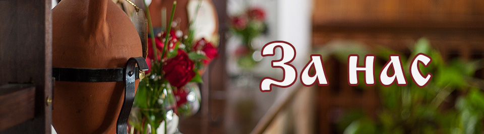
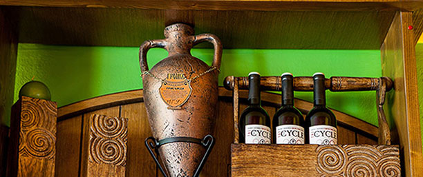
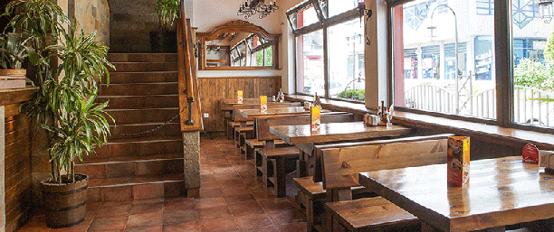
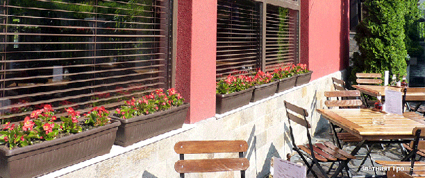
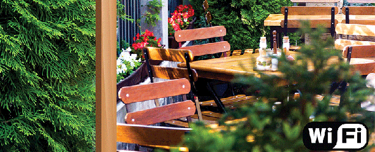

Добре дошли скъпи приятели
Разположени в Студентски Град, ресторанти "Грошъ" ще Ви посрещнат в приятна обстановка, в която цари уют и спокойствие, а на власт са вкусните гозби и добре подбраните специалитети.
Постоянно изненадващи с тематични и интересни партита, заведенията "Грошъ" могат да направи всеки делник и празник незабравим спомен. Заведенията са подходящи за семейна сбирка, празнуване на фирмен празник или интимна вечеря. Заповядайте!
Как го постигаме
- държим на Вас и търсим мнението Ви. Така ни помагате да ставаме по-добри и стойностни
- ценим и подкрепяме хората, които работят за Вас – нашия персонал. Горди сме от факта, че някои от тях са при нас вече от 15 години.
- всяко от заведенията ни има свой главен готвач, който влага в ястията си своя личен почерк. Всичко се приготвя от пресни продукти и на място.
- търсим съдействие от най-добрите професионалисти в бранша за разработване на нови кулинарни идеи
- защото държим да сме актуални, нови и различни. И успяваме.
С какво сме различни?
- търсим и използваме истински продукти. Не работим с полуфабрикати.
- не сме съвършени. Всичко при нас е „handmade” и затова е уникално.
- заведенията ни са изградени от естествени материали – дърво и камък, а цветовете ни са топли и естествени. С тяхна помощ, архитекта на фирмата, който работи с нас от самото начало, успя да пресъздаде усещането за домашен уют, топлина и гостоприемство.
- ценим истинските неща, традициите и вниманието към детайлите
- Имаме индивидуален подход – изготвяме специално за Вас пакетни предложения за Вашите лични и фирмени поводи. Организираме рождени и имени дни, коледни партита, балове и юбилеи.
Какво предлагаме?
- разнообразно и богато обедно меню, включително и комбинирани менюта с възможност за над 30 комбинации.
- всеки месец различни промоции и нови тематични ястия.
- всеки сезон нови кулинарни изненади.
- в празничните месеци организираме тематични събития с игри и забавни персонажи.
И да, горди сме, че сме едни от малкото заведения, които могат да се похвалят с подобно разнообразие и динамичност. Защото всичко това е за Вас!